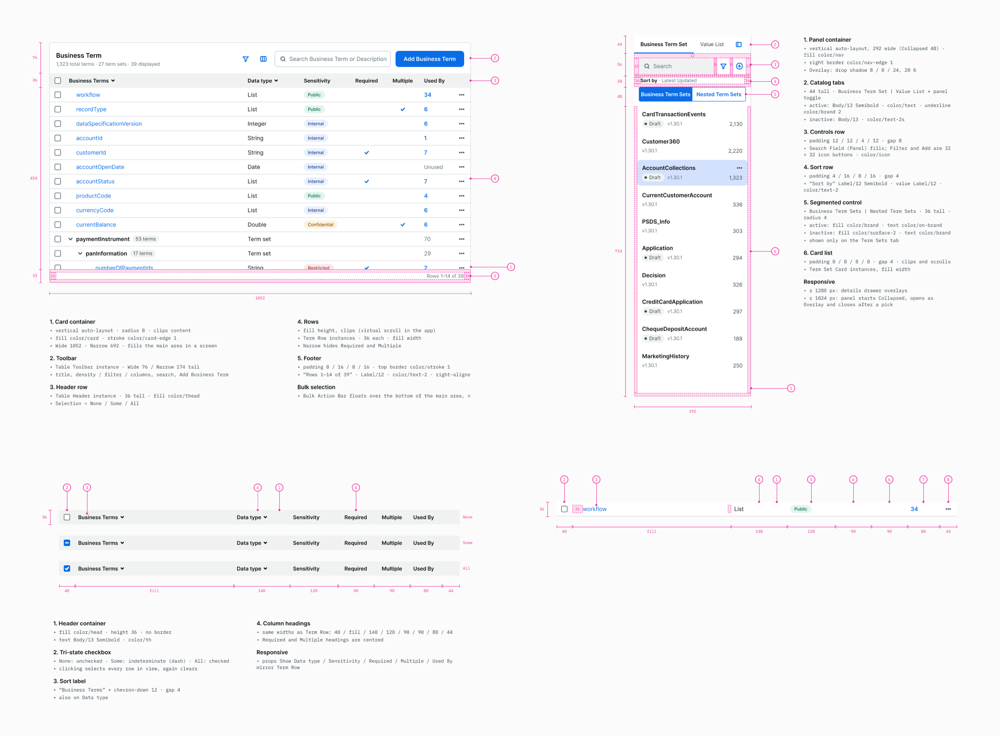
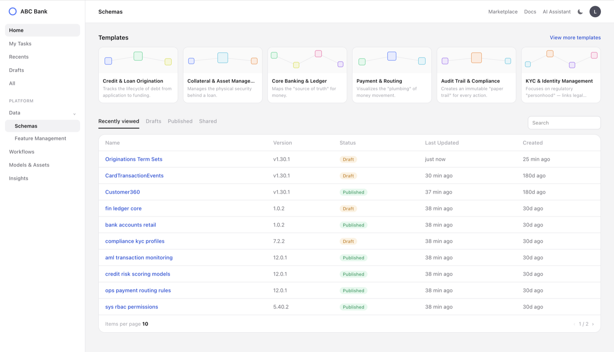
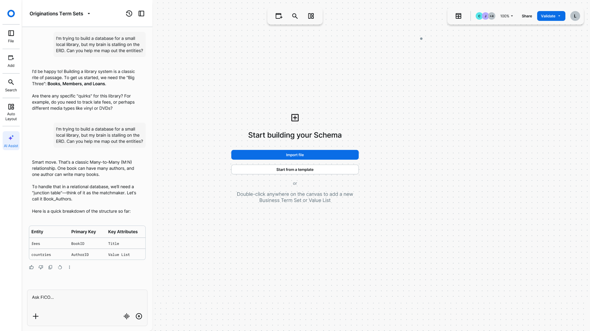
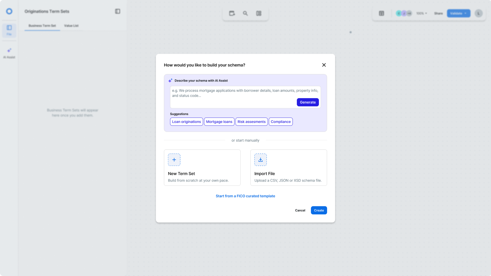

As the sole designer, I led the end-to-end design of the data models and schema management for FICO’s BTC project. I also designed a reusable data model framework that internal teams adopted as a shared foundation, reducing duplicated design effort across products.
Research
To understand the pain points of data models, I teamed up with our ux research to interview 5 solution architects/consultants who worked directly with clients through the current system. Through these conversations, I learned:
General Pain Points
Navigation and Discoverability
- Hard to find where fields and relationships
- No way to see the whole model at once
Relationships and Structure
- Diagrams become unreadable as models grow
- Distinctions between similar concepts are unclear
- Changes don’t preview their impact
Schema Management
- Poor migration tooling and no clear version history
Needs for Core Users
Business Expert:
- Ability to writes using plain definitions
Solution Owner:
- Needs one consistent model to reuse work and catch cross-team impact early.
Technical Expert:
- Needs to see dependencies to change things without surprises.
Design Decisions
Three main decisions shaped the design the Data Model. Each decision came from something we heard in interviews, and each one had to work for all three personas, from business experts to technical experts.
Handling 1000s of attributes
Designing data models for reuse across services
Developer Hand-off

Impact
For the initial release, we decided to focus solely and ship the table version of the data model first. The impact it made:
- 3+ weeks → secs
- of consultant support to self-service setup
- 5+
- teams integrated the data model without custom design rework
- High
- demand from Solution Consultants and FICO World 2025 attendees
“I don’t understand why Features Aggregation and Data Models still haven’t been merged. They are interdependent. We’ve been dealing with this issue for a long time, and we need this integration in the next release.” - FICO World 2025 Attendee
~ Oct 2025 I was laid off, however I kept designing ~
Initial Designs vs Redesigned
Post-FICO, I continued using Figma x Claude Code on my own time, to design BTC with no technical restrictions and a reimagined version of how it should behave.



Learning & Retrospective
A key challenge was that a change to a data model can ripple outward, affecting what people see and who can access it. My early design focused on making connections easy to draw, which felt safe but missed the real test: whether it works in practice, with real users and thousands of data points.
Using Claude Code has made it far faster to prototype at that scale. If I did this again, I’d put working prototypes in front of real users much earlier.